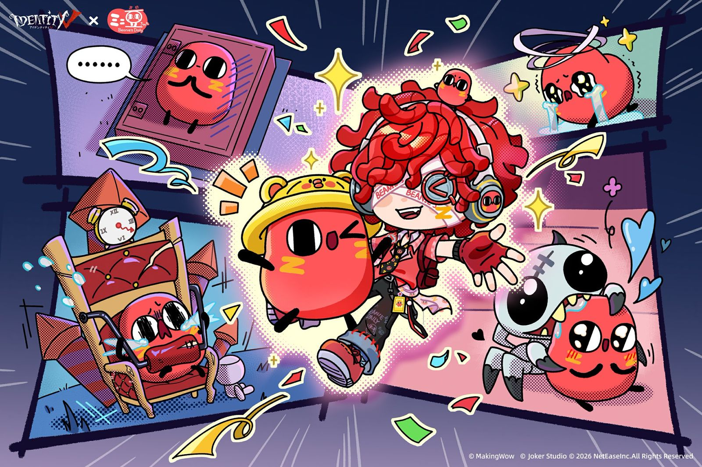
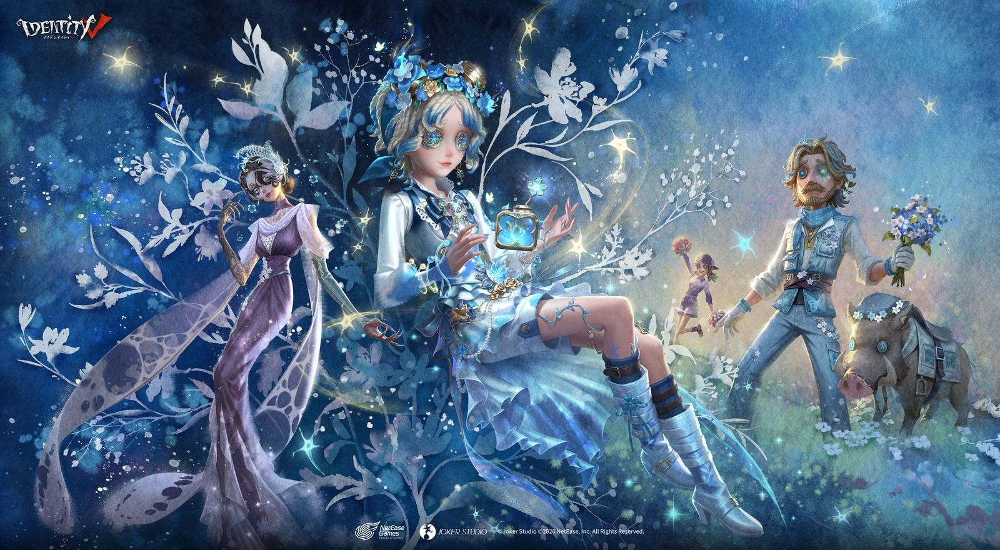
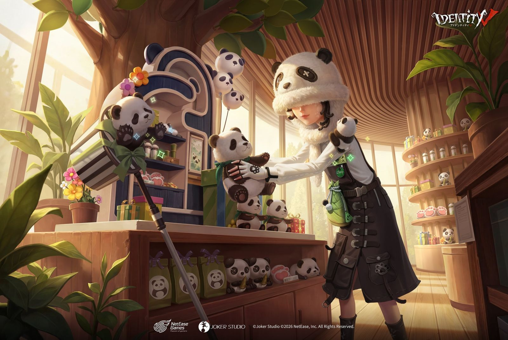
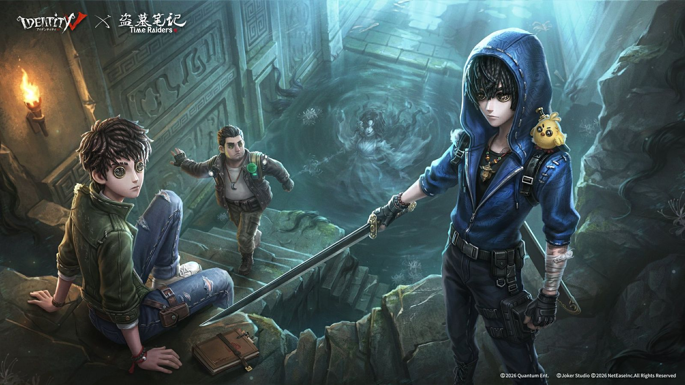
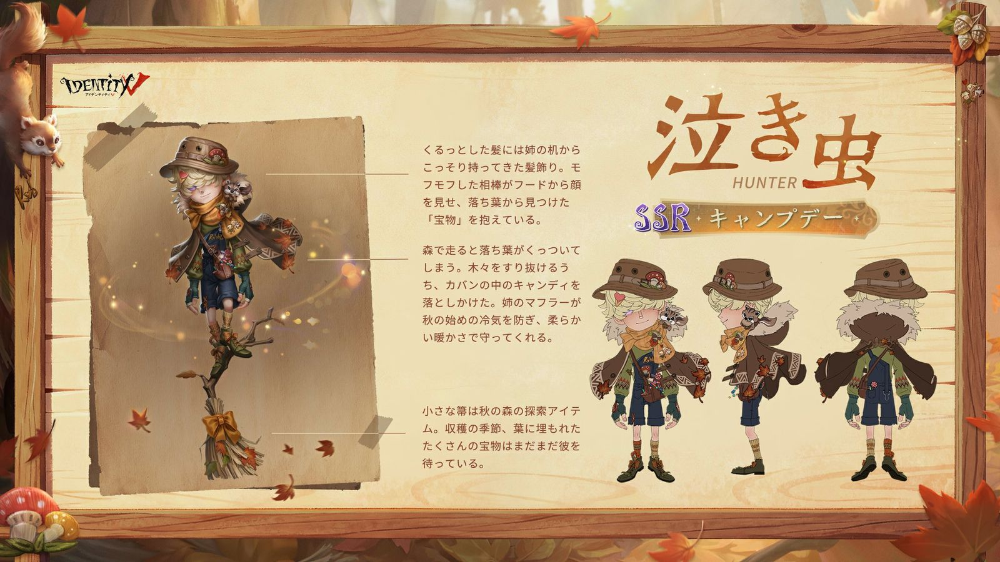
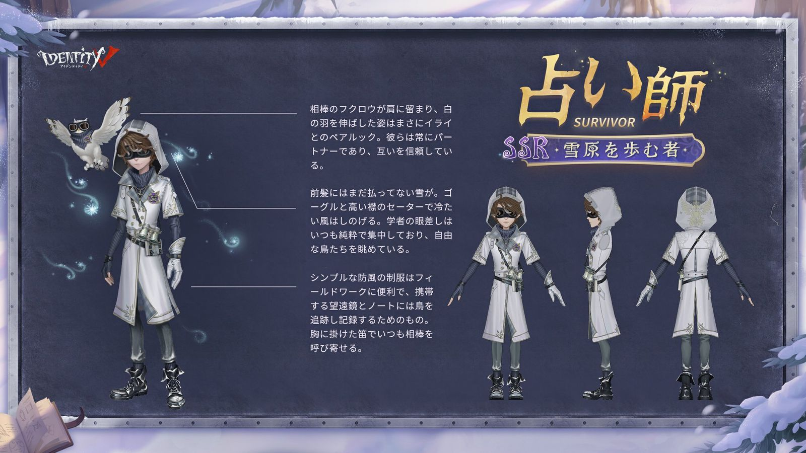
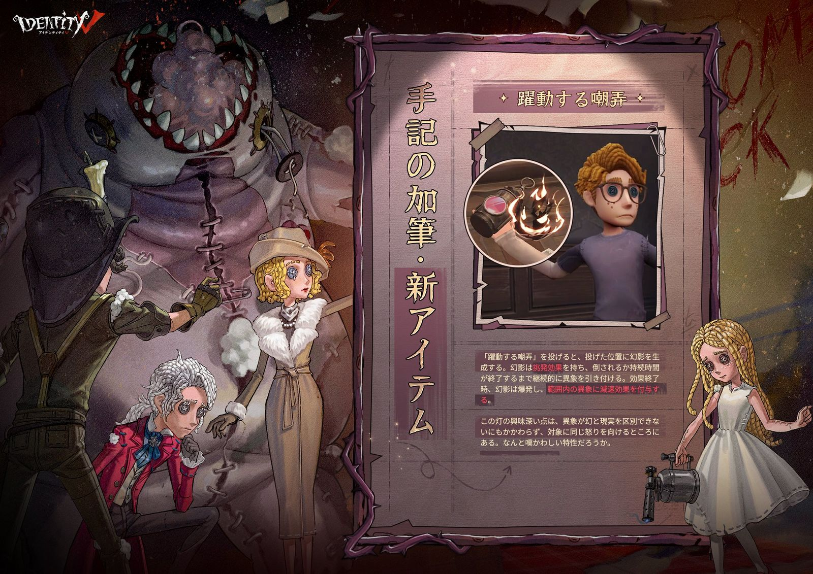
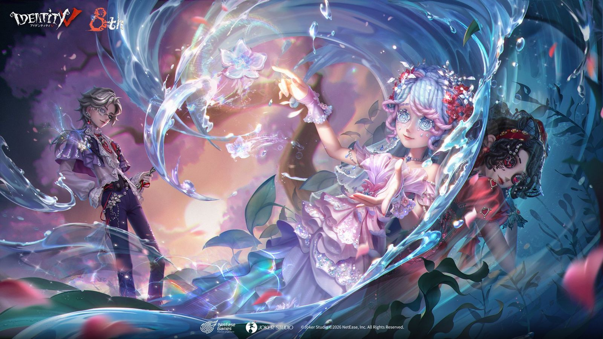
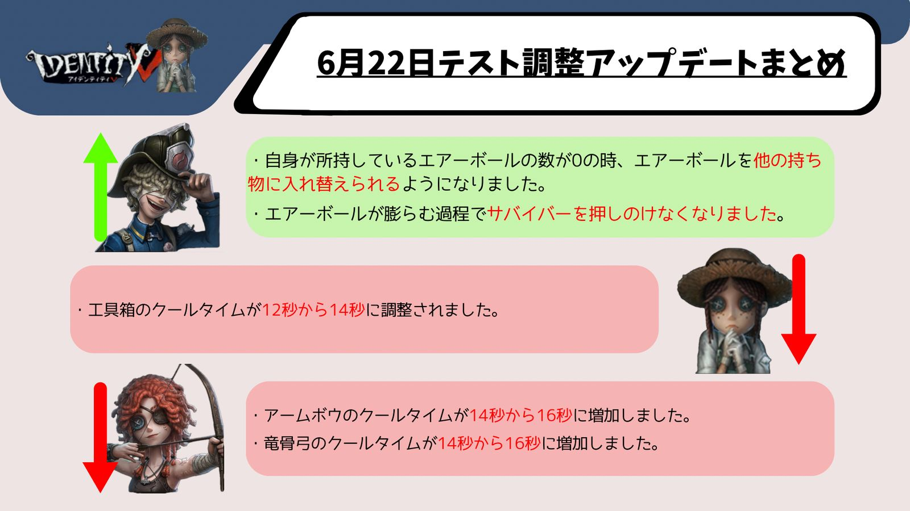

IdentityV（第五人格）の2026年7月に実施されたアップデート・イベント・キャラ調整のまとめです。
2026.7.30現在

ミニ豆ちゃんコラボ衣装・家具がショップに登場！
【SSR衣装】火災調査員-Mini
Mame-chanが1388エコー（初週15%オフ・1178エコー）で期間限定登場！
【SR家具】ミニ豆ちゃんアイスカップも288エコー（初週20%オフ・230エコー）で最大10個まで購入可能！
販売期間：2026年7月30日メンテナンス後〜2026年8月30日23時59分
コラボ情報の詳細はこちら
へむへむの一言
火災調査員の衣装だったらLINEコラボのレナード衣装と一緒ぐらいかわいい
2026.7.23現在

「手記の加筆」に盗墓筆記コラボマップが登場！
普通・困難難易度の【災いの女】マップに限定異象「旗持ちの陰兵」「角笛の陰兵」が出現！コラボ限定詞章「鬼璽」「蛇眉銅魚」も登場します。
新たな叙事手法「独白叙事」「充溢叙事」も追加されました。その他ジャンプ操作の最適化・手つなぎ機能の強化など多数のアップデートが実施されています。
手記の加筆の詳細はこちら
へむへむの一言
手記のコラボマップが登場！コラボマップくると思ってなかったからほんとう

シーズン真髄 S43・真髄2が開放！
【UR衣装】機械技師-シアノタイプ、【SSR衣装】「女王蜂」-未明の残影、【SSR衣装】野人-蘇る記憶が新たに追加されます！
抽選80/130回達成で対応アイコンを1つ選択、180回達成で【アイコン】機械技師-シアノタイプを獲得できます。
へむへむの一言
機械技師のUR衣装が安定にかわいい。ゲットしようか迷う、、

「パンダの守護者」2026イベント開催！パンダ衣装も多数登場！
パズルイベントを完了すると【SR家具】パンダのぬいぐるみ展示棚、【アイコン】「VV」5歳！などのボーナスを獲得できます！
【SSR衣装】昆虫学者-モフモフ記念工房・血の女王-レッサーパンダ祝福官が初週40%オフの828エコーで新登場！【SSR衣装】「少女」-パンダの仲間など過去のパンダシリーズ衣装も期間限定で再登場！
【SR携帯品】サバイバー-パンダのぬいぐるみ、【SRペット】パンダの赤ちゃんなどもイベントショップに再登場（80スコープ）！
イベント期間：2026年7月23日メンテナンス後〜2026年8月19日23時59分
へむへむの一言
パンダ衣装がかわいすぎて絶対にとるべし。
2026.7.16現在

Identity V×盗墓筆記コラボ「呉山居の帰客」開催！
イベントログインで【SSR衣装】航空エンジニア-王胖子、【SSR携帯品】航空エンジニア-摸金符を無料で受け取れます！「帛書の残片」を集めて【SSR衣装】漁師-禁婆、居館音楽、特殊アクションなどの豪華ボーナスと交換しよう！
イベント第2週からは手記の加筆と連動した特別チャレンジも開放！コラボ限定詞章「鬼璽」や限定異象「角笛の陰兵」なども登場します。
イベント期間：2026年7月16日メンテナンス後〜2026年8月17日23時59分

盗墓筆記コラボ衣装・携帯品がショップに登場！
【SSR衣装】小説家-呉邪、傭兵-張起霊が各1388エコーで登場！コラボパックは20%オフの1958エコーで購入可能！
【SSR携帯品】小説家-蛇眉銅魚、傭兵-鬼璽も各1068エコーで購入可能！（エコーのみ）
販売期間：2026年7月16日メンテナンス後〜2026年8月17日23時59分
コラボ情報の詳細はこちら
キャラ・天賦調整が実施！
【ハンター調整】書記官の判決状態の移動速度上昇が8%から6%に低下。写真家の通常攻撃前アクションが0.4秒から0.42秒に延長されました。
【天賦調整】サバイバー天賦「一蓮托生」の加速効果が6〜10%から4〜8%に低下。ハンター天賦「傷弓之鳥」はロケットチェア拘束中のサバイバーがいる場合に効果消失の制限が追加されました。
へむへむの一言
「一蓮托生」の加速効果がいろんな場所で発動されることから調整されてしまった。愛用していたのに、、
2026.7.9現在

遡及シリーズ【SSR衣装】泣き虫-キャンプデーがショップに登場！
初週28%オフの988エコーで購入可能！（通常1388エコー）購入で衣装限定タグ：遡及-泣き虫を獲得できます。
販売期間：2026年7月9日メンテナンス後〜2026年8月5日23時59分
へむへむの一言
キャンプらしいデザインで泣き虫の中でもトップを争うぐらい好きかも

ウィムジーシリーズ【UR衣装】ガードNo.26-檻中の獣がショップに登場！
2888エコーまたは12888欠片で購入可能！初週25%オフの2158エコーで販売されます。
販売期間：2026年7月9日メンテナンス後〜2026年8月5日23時59分
へむへむの一言
ボンボンと思えないくらいのかわいい衣装が出た。見とれて爆弾を当てられないように気を付けよう！

遡及シリーズ【SSR衣装】占い師-雪原を歩む者がショップに登場！
初週28%オフの988エコーで購入可能！（通常1388エコー）購入で衣装限定タグ：遡及-占い師を獲得できます。
販売期間：2026年7月9日メンテナンス後〜2026年8月5日23時59分

「手記の加筆」に新アイテム・新異象が追加！
新アイテム【躍動する嘲弄】が追加！幻影を生成して異象を引き付け、効果終了時に爆発して範囲内の異象に減速効果を付与します。
新異象【故紙の山】が【災いの女】マップに登場！プレイヤーを隠された詞章まで導いてくれる不思議な異象です。
その他、アイテム/詞章ロック機能・二級パスワード機能・「仲間を補充-2人」モードなど多数の機能が追加されました。
手記の加筆の詳細はこちら
へむへむの一言
新アイテムと新異象が登場！アイテムも身代わりアイテムで使い勝手が面白く新異象も詞章まで導いてくれる面白い性能。ぜひ金アイテムに導いてくれ！！
2026.7.2現在

バージョンイベント「シュティレヴァルトの舞踏会」開催！
水妖の伝説で知られる街で起きた新たな事件をMissトゥルースと共に解き明かそう！シナリオ体験・イベントモード・デイリーログインを完了するとイベントSR衣装、SSR家具「誓いの石碑」、SSR衣装解放カードなどの豪華ボーナスを獲得できます！
全イベントタスクを完了するとSSR衣装解放カードを獲得できます！
イベント期間：2026年7月2日メンテナンス後〜2026年7月29日23時59分
詳細はこちら
へむへむの一言
SSR衣装開放カードは絶対にとりたいところ！

S42終了・S43シーズン開始！シーズン真髄も更新！
今週のメンテナンス後にS42が終了し、S43が始まります。協会活躍度・個人活躍度がリセットされ、最終ランキングに基づいてシーズンボーナスが配布されます。
【シーズン真髄】S43・真髄1が開放！【UR衣装】庭師-「ウィリー」、【SSR衣装】「レディ・ファウロ」-風と共に舞う、【SSR衣装】写真家-夢に沈むが追加されます！
【推理の径】S43の新報酬はSPボーナスに【SSR衣装】一等航海士-フロストフレイムなど！
【ランク秘宝】毎日ランク戦3回で【UR携帯品】泣きピエロ-メッセンジャー号、【SSR携帯品】「ビリヤードプレイヤー」-カオススパイラル、画家-夕暮の刻を獲得できます！
へむへむの一言
ついに新シーズンが開幕！個人的にビリヤードプレイヤーの携帯品がかっこいい！！

Identity V×紙装束第二弾コラボ開催！
【UR衣装】骨董商-紙花嫁・陶夢嫣を含むコラボパックが31%オフの3268エコーで登場！イベントに参加すると【SSR衣装】患者-李逢沢、【SSR家具】諦聴などのボーナスも無料で獲得できます！
第一弾コラボ衣装・家具も同時に再登場！【UR衣装】調香師-聶莫黎などが期間限定で購入可能！
販売期間：2026年7月2日メンテナンス後〜2026年8月2日23時59分
コラボ情報の詳細はこちら
へむへむの一言
第一弾の復刻も同時に来ているので、見逃さないように注意が必要！
「Mr.ゴールデンブーツ」応援計画開催！
試合結果を予測して「記念モデル」を獲得しよう！全16試合の予測に参加して勝率50%以上で【アイコン】預言者2026、100%達成で【タグ】全勝の預言者を獲得できます！
へむへむの一言
私の優勝候補は、王道だけどフランス。そしてそれを壊す可能性があるのが、ノルウェーとモロッコ。全部あてたい、、

大規模キャラ・天賦・マップ調整が実施！
【サバイバー調整】庭師・闘牛士・マジシャン・作曲家・納棺師・医師・弓使いなど多数が調整！天賦「囚人ジレンマ」「寒気」「雲の中で散歩」が削除され新天賦に変更されました。
【ハンター調整】彫刻師・断罪狩人・書記官・「女王蜂」・写真家・「ビリヤードプレイヤー」など多数が調整！天賦「生還者なし」「焼入れ効果」「警戒」が削除され新天賦に変更されました。
【マップ調整】湖景村・月の河公園・軍需工場・赤の教会が調整。月の河公園に新モジュール「スプリングボックス」が追加されました！
キャラ調整の詳細はこちら
へむへむの一言
今回の調整で化けそうなのは、サバイバーから火災調査員と騎士、ハンターからは断罪狩人の予想！今環境が楽しみ！

「手記の加筆」に新要素「叙事手法」が追加！
探索開始時に低確率でランダム発動する「叙事手法」が追加！詞章の重量軽減「簡略叙事」、スタミナ消費軽減「余白叙事」、異象強化＆撃破時ドロップ発生「効率叙事」の3種類が実装されました。
また、近くのプレイヤーと手を繋いで行動できる「手繋ぎ機能」も追加！手を繋ぐほどスタミナ消費が低下し回復が早くなります。
へむへむの一言
3.効率叙事：全ての異象のステータスが上昇し、異象が倒された後、ランダムな確率で詞章またはアイテムがドロップします。この要素がめっちゃ面白い。異象を倒すメリットが増えたのは嬉しい！
「手記の加筆」の詳細はこちら